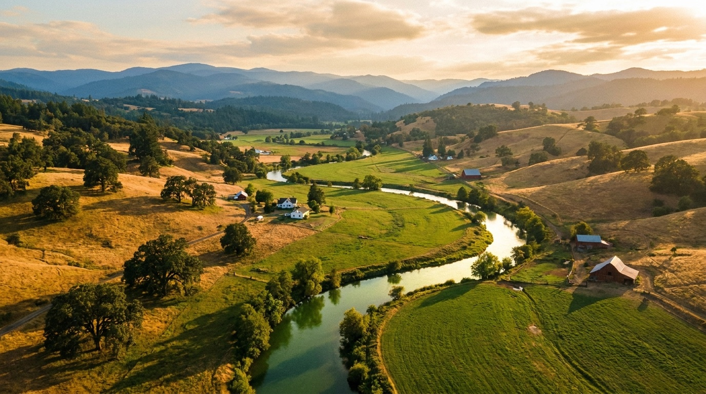

The ranches that sell for top dollar aren't the biggest or even the prettiest — they're the prepared ones. If a sale is on your horizon for next year, these seven moves started now will pay for themselves many times over.
1. Exercise your water rights — visibly. Irrigate the mapped acres and keep the power bills. Five years of non-use forfeits a right, and buyers' attorneys check. A documented, active right is often the single most valuable line item on the ranch.
2. Pull your paper. Well logs, water certificates, septic records, outbuilding permits, lease agreements, deferral status. One binder (or one folder I can hand to buyers) is worth real percentage points of price.
3. Fix fences on the road frontage first. Buyers form their number in the first quarter mile. Tight wire and straight posts along the county road reframe everything they see after.
4. Verify your deferral. A surprise disqualification during escrow — with 5–10 years of back taxes attached — has cratered more than one ranch sale. Confirm status with the assessor before buyers do.
5. Deal with the boneyard. Every ranch has one. Scrap prices are decent; haul it while it's your schedule, not a buyer's demand.
6. Photograph your peak. First-cut hay down, stock on green grass — that's the imagery that sells. Even if you list in November, I want to shoot your ranch in June.
7. Talk to your CPA about timing. Capital gains, 1031 exchanges, and deferral interact with the calendar. The netted difference between a smart sale structure and a default one buys a truck.
I do free, no-commitment walk-throughs for owners a year out — a punch list, prioritized by return, specific to your place. The conversation costs nothing, and the punch list pays for itself.
Whether you're buying your first five acres or selling the ranch that raised you — call, text, or email. Kimmy answers.
541-643-9509